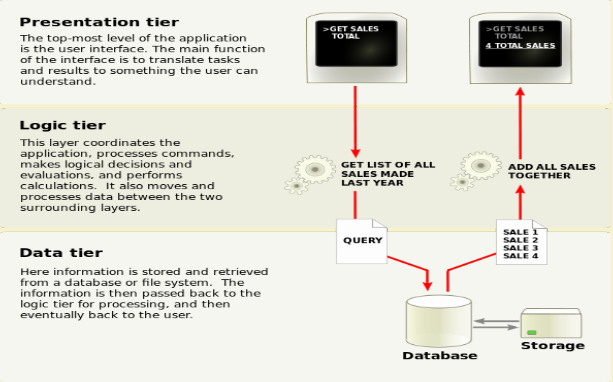
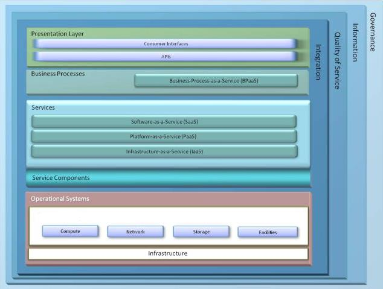
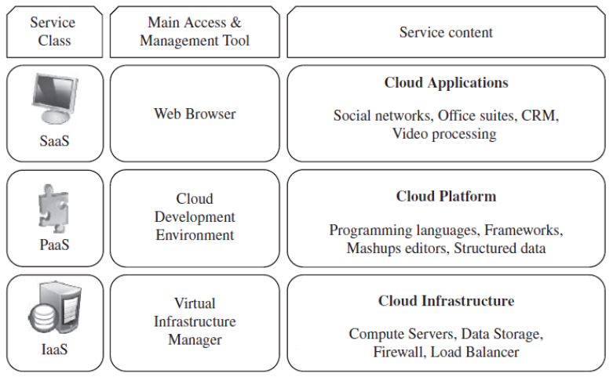
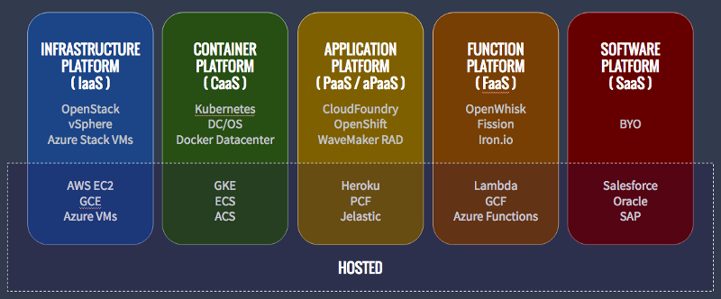
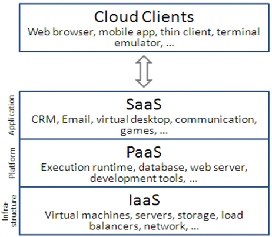

Cloud ImplementationsLink
Cloud Computing Architecture
Client Server ArchitectureLink
- Consists of one or more load balanced servers servicing requests sent by the clients
- Clients and servers exchange message in request-response fashion
- Client is often a thin client or a machine with low computational capabilities
- Server could be a load balanced cluster or a stand alone machine.
Three Tier Client-Server Architecture

Client Server model vs. Cloud model
| Client Server Model | Cloud Computing Model |
|---|---|
| Simple service model where server services client requests | Variety of complex service models, such as, IaaS, PaaS, SaaS can be provided |
| May/may not be load balanced | Load balanced |
| Scalable to some extent in a cluster environment. | Theoretically infinitely scalable |
| No concept of virtualization | Virtualization is the core concept |
Cloud Services

Cloud service models

IntroductionLink
- Cloud computing is providing developers and IT departments with the ability to focus on what matters most and avoid undifferentiated work like procurement, maintenance, and capacity planning.
- As cloud computing has grown in popularity, several different models and deployment strategies have emerged to help meet specific needs of different users.
- Each type of cloud service, and deployment method, provides you with different levels of control, flexibility, and management.
- Understanding the differences between Infrastructure as a Service, Platform as a Service, and Software as a Service, as well as what deployment strategies you can use, can help you decide what set of services is right for your needs.

Cloud Computing Service Models
There are three main models for cloud computing. Each model represents a different part of the cloud computing stack.

Different people may have different requirements like deployment of code, not ready to manage the underlying infrastructure or simply want to use automated services. Cloud providing all kind of services to users achieve their goals.
Cloud offering 3 types of service models as follows:

On-premises IT infrastructure is like owning a car. When you buy a car, you’re responsible for its maintenance, and upgrading means buying a new car.
IaaS is like leasing a car. When you lease a car, you choose the car you want and drive it wherever you wish, but the car isn’t yours. Want an upgrade? Just lease a different car!
PaaS is like taking a taxi. You don’t drive a taxi yourself, but simply tell the driver where you need to go and relax in the back seat.
SaaS is like going by bus. Buses have assigned routes, and you share the ride with other passengers.
- IAAS (Infrastructure As A Services): IaaS is the hardware and software that powers it all servers, storage, network, operating systems
- PAAS (Platform as a Service): PaaS is the set of tools and services designed to make coding and deploying applications quickly and efficiently
- SAAS (Software As a Service) : SaaS applications are designed for end users and are delivered over the web
- Others
- CAAS Container as a Service (CaaS): Is a form of container-based virtualization in which container engines, orchestration and the underlying compute resources are delivered to users as a service from a cloud provider. Google Container Engine(GKE), AWS (ECS), Azure (ACS) and Pivotal (PKS) are some examples of CaaS.
- Function as a Service (FaaS): It provides a platform allowing customers to develop, run, and manage application functionalities without the complexity of building and maintaining the infrastructure. AWS (Lamda), Google Cloud Function are some examples of Faas



Based on cloud services types we can say EC2 belongs to Infrastructure as a Service. Because when a user working with EC2, he/she responsible for the application, data, choosing the instance (OS, patching) and AWS responsible for the storage, networking, servers & virtualization.
When you try to launch an EC2 instance you can choose AMI with related OS, attach different EBS volumes and you will get control of resources( limited network components i.e security groups, NACL) without maintaining the infrastructure.
AWS Elastic Compute Service or EC2 is IaaS(Infrastructure as a Service). This is because Amazon takes the responsibility of networking, storage, server and virtualization and the user is responsible for managing the Operating System, middleware, runtime, data and application. In PaaS aka **Platform as a Service**the user only needs to take care of data and application, the management of rest of the layers lies in hands of the service provider. AWS Elastic BeanStalk is PaaS.

